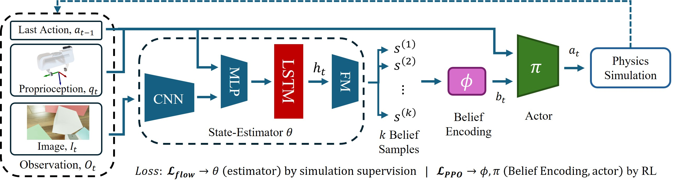
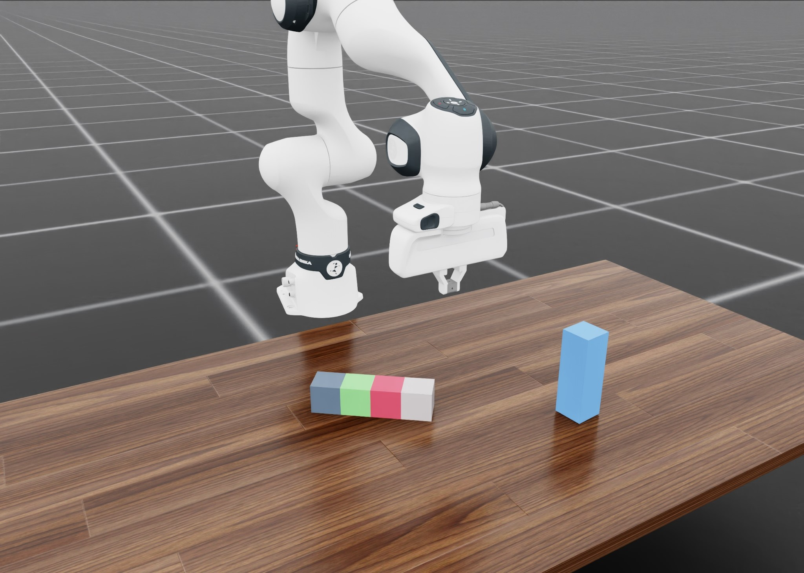
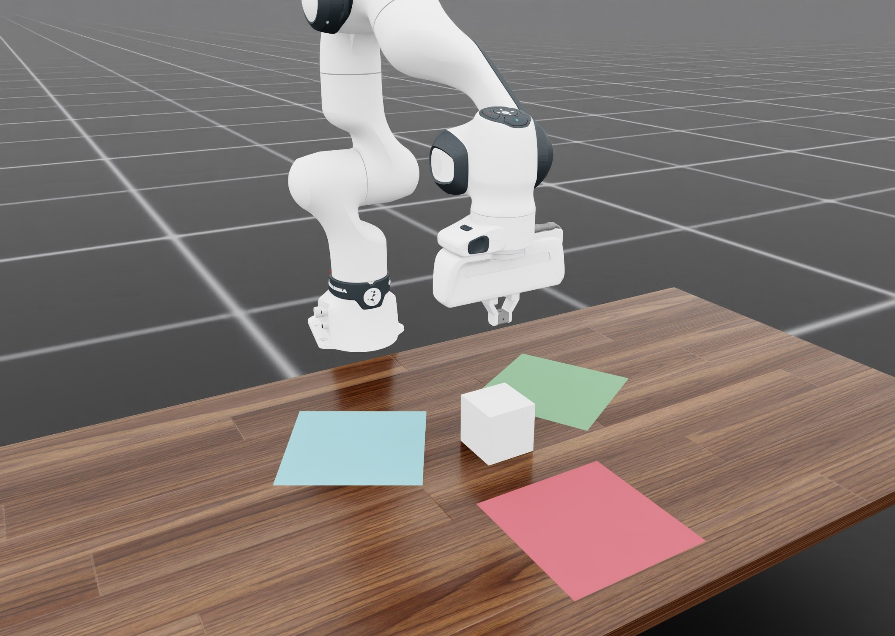
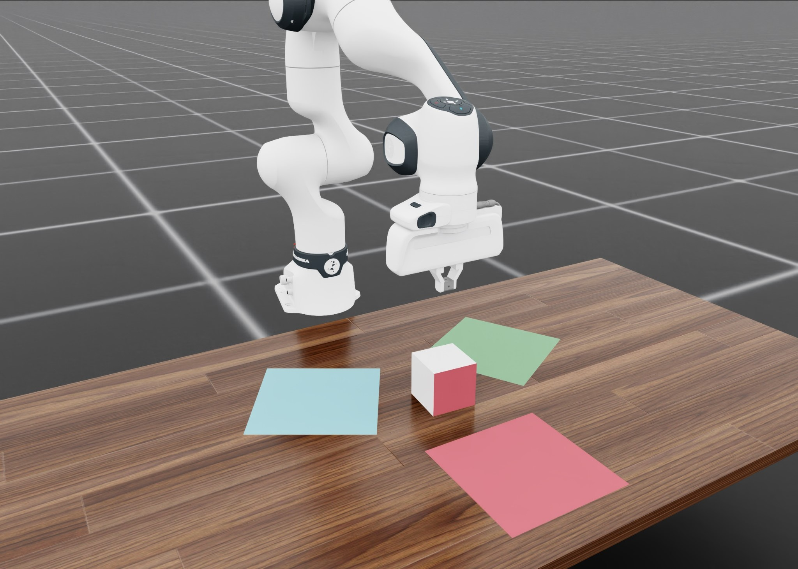
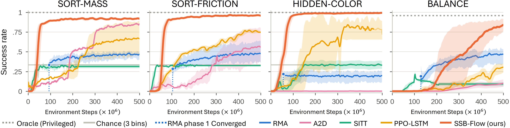

Under review at ICRA 2027
How can simulation efficiently teach a visuomotor policy to gather information? Hidden physical properties, such as mass and friction, substantially affect how a robot can optimally manipulate objects. A privileged teacher directly accesses these properties, so its actions generally do not demonstrate how to acquire missing information, creating a mismatch for a partially-observing learner, which does not observe the privileged state during training or deployment. We instead use a simulator to simultaneously supervise a learned approximation to the belief state and train a policy conditioned on that approximation by reinforcement learning. Our method, Simulator-Supervised Belief Flow (SSB-Flow), learns a sampleable posterior over task-relevant physical quantities from interaction history, using high-dimensional image input alongside proprioceptive input. The policy consumes an encoding of posterior samples, allowing it to use estimated uncertainty when selecting actions. We compare SSB-Flow to three student-teacher approaches originally designed to use privileged information, as well as a strong recurrent RL baseline. Across four challenging manipulation tasks, SSB-Flow achieves the highest success rate on every task, averaging 93.1% versus 64.7% for the strongest alternative, an absolute gap of 28.4%. These results support supervising physical-state inference as an effective use of privileged information for partially observed manipulation.

A recurrent encoder summarizes the wrist-camera image, proprioception, and previous action into a history ht. A conditional flow-matching model, supervised by privileged simulator state, samples K beliefs s(1), …, s(K) over task-relevant physical quantities. The samples show what the belief agrees on and what remains uncertain, and they can stay multimodal while the history is ambiguous. A Deep Sets encoder φ maps them to bt for the actor π. The estimator is trained only by Lflow; the encoder and actor are trained only by PPO, and the actor never receives privileged input.
Three tasks, four variants in total, in which success depends on a hidden object property. The information the agent needs leaves no trace in the environment's persistent state: passive observation cannot reveal it, only the agent's own interaction history can.




Deployable-policy success rate against training environment steps. Lines are the mean over 3 runs per method, smoothed over 5M steps; bands span the minimum to maximum across runs. Grey dotted: best oracle success; grey solid: chance (three bins). RMA's student starts where its teacher converged (blue dotted).
| Method | Balance | Sort-Mass | Sort-Friction | Hidden-Color | Average |
|---|---|---|---|---|---|
| Privileged oracle | 95.9 | 100.0 | 100.0 | 100.0 | 99.0 |
| RMA | 47.7 | 48.2 | 48.6 | 20.5 | 41.3 |
| SITT | 17.9 | 32.7 | 33.4 | 34.4 | 29.6 |
| A2D | 9.8 | 85.8 | 56.8 | 0.3 | 38.2 |
| PPO-LSTM | 30.2 | 67.3 | 77.2 | 84.2 | 64.7 |
| SSB-Flow (ours) | 83.4 | 92.8 | 96.7 | 99.4 | 93.1 |
Simulation success rate (%): peak of each curve within 500M steps, averaged over 3 runs. The oracle receives full-state inputs.
Rollouts of SSB-Flow in simulation, shown with the state estimator's belief samples. In each case the belief is broad before contact, narrows as the robot interacts with the object, and the policy commits once the relevant property is resolved.
Before contact, mass and color beliefs are near-uniform and friction sits at its prior. In the first episode, two failed flips sharpen the friction and mass beliefs onto their true values; the third flip succeeds, the hidden face comes into view, and the cube is sorted into the matching bin. The inset shows the wrist camera, the policy's only image input. Three episodes, real time.
We deploy Hidden-Color on a Franka FR3 with an 8 cm white cube placed colored face down, so every trial requires a flip. The policy observes a 54 × 96 RGB image from a wrist-mounted camera, proprioception, and its previous action at 20 Hz. SSB-Flow succeeds in 24 of 30 trials; PPO-LSTM, trained under the same randomization, succeeds in 0 of 30.
The policy tips the cube over, checks the newly revealed side, confirms the color (red), and sorts it into the red bin.